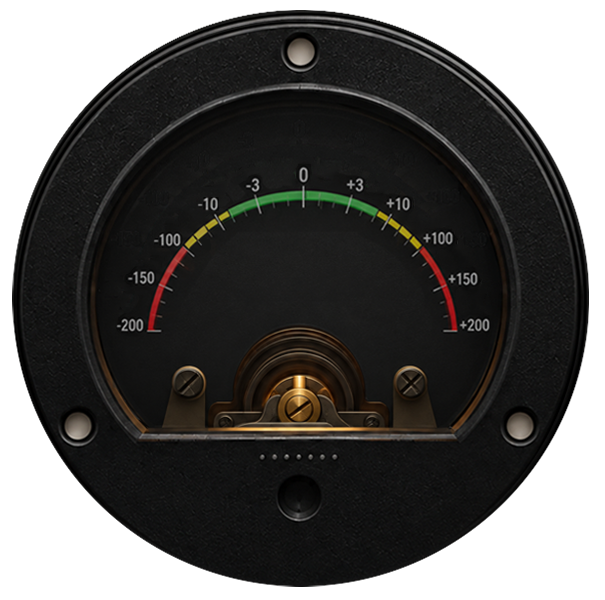
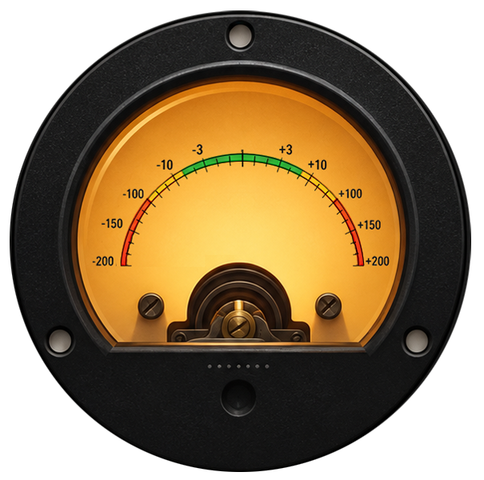

A free, guided tool for instrument setup: a tuner for 4, 6, 7 and 12-string instruments — guitars, bass, mandolin, ukulele (standard, drop and open tunings, 432–440Hz reference) — and a step-by-step intonation wizard for tune-o-matic and other adjustable bridges.
The tutorial is fully simulated — no microphone, no audio access, nothing to plug in. Just watch the meter and follow along.
For each string: tune it → play the 12th-fret harmonic (always exactly double the open pitch — our reference) → play the same note fretted (reveals fret-placement error). Fretted sharp → lengthen the string; flat → shorten it. Small saddle turns, retune, repeat, done.
Pressing a string down stretches it slightly, raising its pitch — so a mathematically perfect fret placement would actually sound sharp. Real bridges compensate by making the sounding length slightly longer than the scale length demands, which flattens fretted notes back into equal temperament.
The 12th-fret harmonic rings at exactly twice the open string's frequency no matter where the saddle sits, but the 12th-fret fretted note only matches it if the fret sits at the compensated midpoint. Comparing the two is the cleanest way to measure whether your saddle is in the right place.
One cent = 1/100th of a semitone. Below ±3¢ nobody can reliably hear the error, so that's our target.
Pick where the guitar's sound comes from, your guitar, its tuning, and your reference pitch. An audio interface is the most accurate; a phone or laptop mic works fine in a quiet room.
If notes only register on hard plucks, choose High. The level meter shows what the gate hears: it analyses only while the bar moves at all.
All values in cents. Defaults shown in placeholders; leave a field empty to use the defaults. Your values are saved in this browser only. All tuning units are in ¢
After granting access, play something — you should see the level meter move and a waveform appear.


Intonation shifts as strings stretch and age, and even with temperature and humidity. Re-check after any restring or gauge change — it only takes a few minutes per string once you're comfortable.
If one string refuses to converge: check that string's action height (high action makes notes go sharp as you press harder), and look for a worn or misaligned saddle. And remember — after moving a saddle you must retune before re-measuring; the tool walks you through that loop.